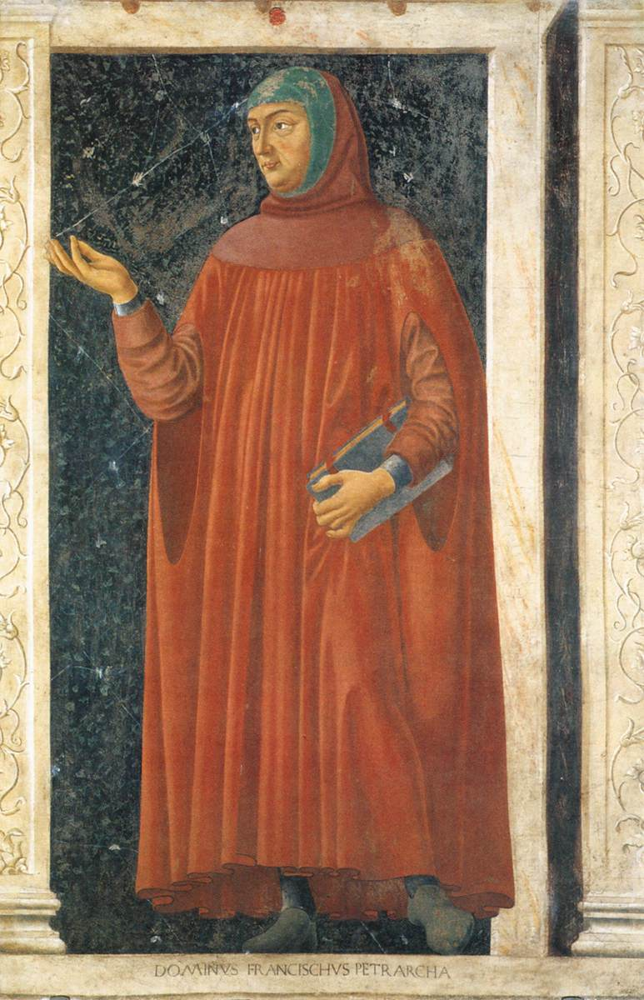
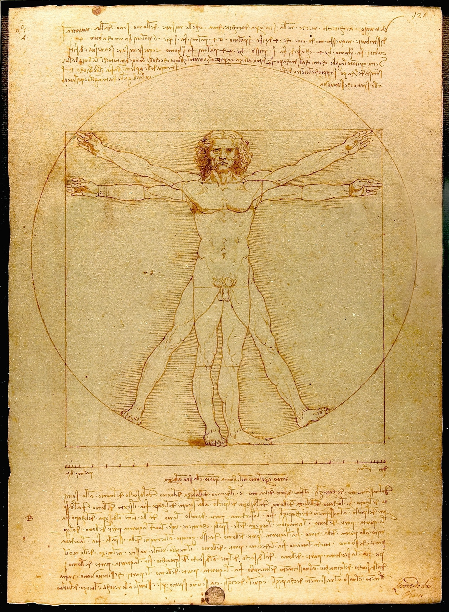
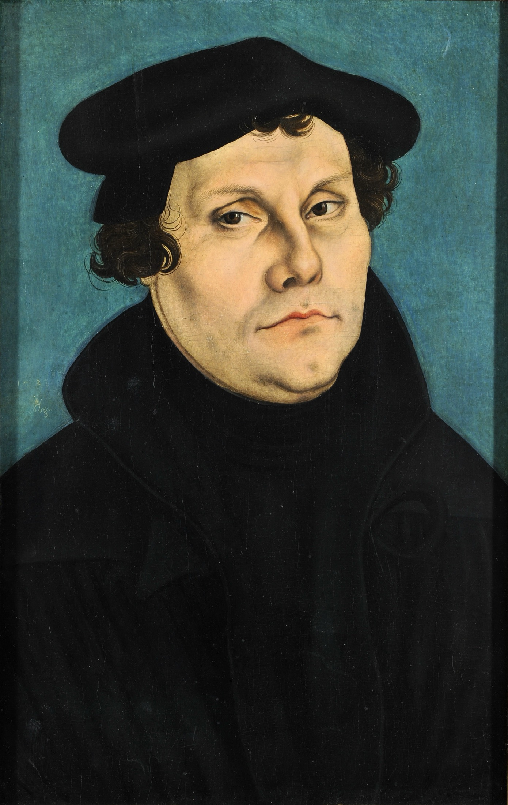
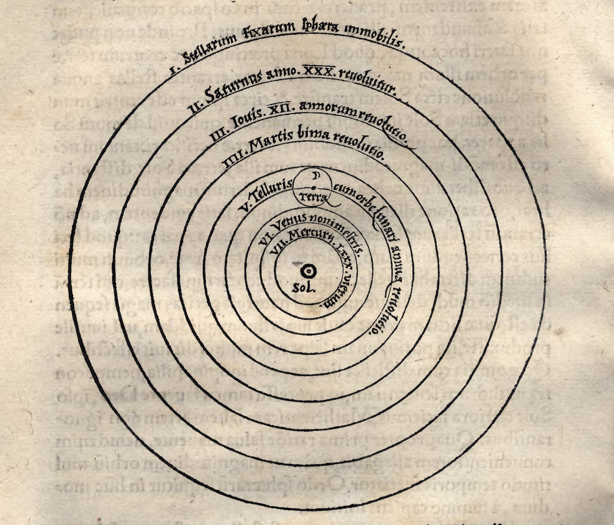

Tema 7 · El nacimiento de la modernidad
§30 · El nacimiento de la modernidad europea
Llamamos moderno a lo reciente, a lo que acaba de estrenarse: un teléfono moderno, una idea moderna. Por eso desconcierta que los historiadores den el nombre de Edad Moderna a una época que empezó hace más de cinco siglos y que hace ya doscientos años que terminó. La palabra guarda, sin embargo, la pista de lo que vamos a estudiar: quienes vivieron aquellos siglos se sintieron nuevos, distintos de sus abuelos medievales, y esa conciencia de novedad es ella misma uno de los rasgos de la época.
La Edad Moderna es el período histórico que sigue a la Edad Media y precede a la Edad Contemporánea; abarca, a grandes rasgos, del siglo XV al XVIII. Sus límites son convencionales y los historiadores no se ponen de acuerdo sobre ellos: por un extremo se proponen la caída de Constantinopla en 1453 o la llegada de los europeos a América en 1492; por el otro, la independencia de los Estados Unidos en 1776 o, con más frecuencia, la Revolución francesa de 1789. Conviene que desconfíes de estas fechas redondas: ninguna marca un corte limpio. La modernidad no llegó de golpe, como un trueno, sino como un lento amanecer que despunta en una región y tarda generaciones en alcanzar a las demás1.
Una sola explicación del mundo. Para entender qué nace en la modernidad hay que recordar qué deja atrás. En la Europa medieval que estudiamos en el tema anterior, la explicación de la realidad tenía un único centro: el Dios cristiano, transmitido por la Biblia y custodiado por la Iglesia. Cuando un fenómeno excedía el texto sagrado, se acudía a la autoridad de un sabio antiguo —sobre todo Aristóteles—; y si la realidad, la Biblia y la filosofía griega entraban en conflicto, se imponía siempre la solución religiosa. Esa cosmovisión total, que explicaba desde la creación del tiempo hasta el orden moral y las instituciones, es la que se resquebraja en los siglos modernos. La modernidad no es un acontecimiento, sino el cruce de tres fuerzas que, juntas, agrietan ese centro único. Las tres se desarrollan en las secciones siguientes; conviene que las veas primero de un vistazo Tabla 7, porque ninguna se entiende sin las otras dos.
El Humanismo. La primera fuerza es un cambio de mirada. Los humanistas del Renacimiento recuperan la cultura de la Antigüedad —su literatura, su arte, su filosofía— y, con ella, un interés nuevo por el ser humano: su dignidad, sus capacidades, su vida en este mundo. Es el giro antropocéntrico, el desplazamiento del hombre hacia el centro de la reflexión, allí donde el pensamiento medieval había puesto a Dios. Lo estudiaremos en §31.
La Reforma protestante. La segunda fuerza fractura la unidad religiosa de Occidente. Lo que empieza como una crítica interna del cristianismo —la protesta de Lutero contra la venta de indulgencias— termina rompiendo el monopolio de la Iglesia católica sobre la verdad cristiana: a partir de entonces hay católicos, protestantes y ortodoxos, y cada confesión reclama para sí la interpretación correcta de la Biblia. La verdad religiosa, antes una y custodiada, se vuelve plural y disputada. Es el asunto de §32.
La revolución científica. La tercera fuerza cambia la imagen misma del mundo y, sobre todo, el modo de conocerlo. La Tierra deja de ser el centro inmóvil del cosmos; los fenómenos pasan a explicarse por causas naturales investigables; y la autoridad de la Biblia y de Aristóteles cede ante un criterio nuevo: la observación y la razón. Más que un conjunto de descubrimientos, lo decisivo es un método. De ello trata §33.
El hilo común. ¿Qué une a tres procesos tan distintos —uno cultural, otro religioso, otro científico—? Un mismo desplazamiento: el criterio de la verdad emigra desde una autoridad externa —Dios, la tradición, la Iglesia, Aristóteles— hacia el sujeto humano y sus propias facultades: su razón, su experiencia, su conciencia. El humanista confía en las letras y el juicio del hombre; el reformador, en la conciencia del creyente que lee por sí mismo las Escrituras; el científico, en lo que la observación y el cálculo le muestran. Por eso la pregunta que organizará toda la filosofía moderna ya no es «¿qué ha revelado Dios?», sino «¿cómo conocemos nosotros?» —la cuestión epistemológica que abre el racionalismo y que veremos en §34—.
Dos sacudidas más. Conviene mencionar, siquiera de pasada, otros dos terremotos que enmarcan la época. El encuentro con América, a partir de 1492, sacudió la cosmovisión heredada: de pronto había un continente entero y unos pueblos de los que la Biblia no decía nada, y Europa hubo de preguntarse cómo encajaban en su imagen del mundo y de lo humano. Y, en lo político, la autoridad del Papa se quebró al tiempo que se consolidaban el Estado moderno y los Estados-nación, que concentraron un poder antes disperso. Esta dimensión política —del pensamiento medieval al moderno— tiene su sede propia más adelante (ver §41); aquí basta retener que la modernidad rehace a la vez la imagen del cosmos, la del ser humano y la del poder. Empecemos por la mirada nueva: el Humanismo.
| Fuerza | Qué cambia | Figuras / hito | El criterio de verdad pasa a… |
|---|---|---|---|
| Humanismo (§31) | Giro antropocéntrico: recupera la Antigüedad y mira al ser humano | ad fontes; el Renacimiento | el juicio y las letras del hombre |
| Reforma protestante (§32) | Rompe la unidad religiosa; libre examen | Lutero, las 95 tesis (1517) | la conciencia del creyente que lee la Biblia |
| Revolución científica (§33) | Nueva imagen del mundo y, sobre todo, nuevo método | Copérnico, Galileo, Newton; Bacon | la observación y la razón |
§31 · El Renacimiento y el humanismo
El nombre lo dice casi todo. Renacimiento significa «volver a nacer», y la pregunta inmediata es: ¿qué es lo que renace? La respuesta es la cultura de la Antigüedad clásica —la literatura, el arte y el pensamiento de Grecia y Roma—, que los humanistas sienten haber recuperado tras los largos siglos medievales. El Renacimiento es una enorme corriente cultural que surge a finales del siglo XIV en el norte de Italia y se extiende por Europa durante los siglos XV y XVI. Es importante que no lo confundas con un estilo artístico únicamente: fue un movimiento que acabó tocando la literatura, la política, la ciencia y, lo que aquí nos importa, el modo de entender al ser humano.
Los humanistas y las letras antiguas. Los intelectuales que impulsan ese redescubrimiento se llaman humanistas, y al movimiento se le da el nombre de humanismo. Suele considerarse padre del humanismo al poeta Petrarca (1304-1374), que se entusiasmó buscando y copiando manuscritos antiguos olvidados en las bibliotecas. Los humanistas convirtieron las obras de la Antigüedad en modelo de la sociedad naciente y, a partir de ellas, cultivaron un conjunto de saberes —la gramática, la retórica, la poesía, la historia y la filosofía moral— que llamaron studia humanitatis, «los estudios de lo humano», y de donde viene nuestra palabra «humanidades». No es una elección caprichosa: son los saberes que forman a la persona y la preparan para hablar bien y para participar en la vida pública. El humanista aspira a una ciudadanía elocuente, culta y virtuosa, capaz de actuar en su comunidad.

El humanismo fue obra de una pequeña minoría con acceso privilegiado a la educación y a los libros —caros y escasos antes de que la imprenta los multiplicara—. Pero esa élite no se pensaba a sí misma como un círculo cerrado: aspiraba a transformar el conjunto de la sociedad por medio de la cultura, ofreciendo modelos de conducta prudente y excelente. La idea de que la educación en las letras humanas mejora a las personas y, con ellas, a la comunidad, es una de las herencias más duraderas del Renacimiento.
Humanismo y cristianismo. Sería un error imaginar a los humanistas como enemigos de la religión. La mayoría fueron cristianos sinceros que no querían destruir su fe, sino —en sus propias palabras— «purificarla y renovarla». Su lema fue ad fontes, «a las fuentes»: regresar al cristianismo primitivo de los Evangelios saltándose las complejidades de la teología medieval, del mismo modo que en literatura regresaban a los textos antiguos saltándose las glosas posteriores. En esto reaccionaban contra la escolástica, la filosofía medieval de método rígido y estructura cerrada que estudiamos en el tema anterior. Conviene retener este matiz: el humanismo renacentista es todavía un movimiento religioso; la crítica antirreligiosa, e incluso atea, no llegará hasta la Ilustración del siglo XVIII, cuando la razón humana pase a ocupar el lugar que antes tenía Dios2.
El giro antropocéntrico. Si hay que resumir en una fórmula la aportación del humanismo, es esta: el Renacimiento supone un giro antropocéntrico. Donde el pensamiento medieval era teocéntrico —ponía a Dios en el centro de toda explicación y todo valor—, el humanismo desplaza la atención hacia el ser humano: su dignidad, sus capacidades, sus obras, su vida terrena. No se trata todavía de negar a Dios, sino de mirar al hombre con un interés y una confianza nuevos. Ese desplazamiento de la mirada es la primera de las tres fuerzas que anunciábamos en §30, y prepara el terreno para las otras dos. La siguiente afecta al corazón mismo de la religión: la unidad de la fe cristiana.

§32 · El protestantismo
Durante toda la Edad Media, el cristianismo tuvo el monopolio de la explicación de la realidad: la Biblia y la doctrina de la Iglesia católica dibujaban el marco en que cabía todo lo pensable. Más allá de su contenido religioso, el cristianismo funcionó como un poderoso factor de unificación cultural en un continente fragmentado en multitud de lenguas y reinos: por encima de las fronteras, todos compartían una misma cosmovisión, que explicaba desde el origen del mundo hasta la moral y el orden social. La pregunta de esta sección es cómo esa unidad, que parecía indestructible, se rompió en apenas unas décadas. Y la respuesta empieza en un asunto en apariencia menor: la venta de indulgencias.
El problema de las indulgencias. Según la doctrina católica, los pecados se perdonan mediante el sacramento de la penitencia o confesión: el pecador arrepentido recibe la absolución de un sacerdote a cambio de cumplir una penitencia, que puede ir desde unas oraciones hasta sacrificios mayores. La Iglesia dispuso, además, de un atajo para librar al fiel de esa penitencia: la indulgencia. Y he aquí el punto delicado: la indulgencia podía comprarse. Con dinero se podía uno librar del castigo por los pecados propios, e incluso adquirir indulgencias por los difuntos para acortar su estancia en el purgatorio. La práctica alcanzó su apogeo a comienzos del siglo XVI, cuando se promulgaron indulgencias para financiar la costosísima construcción de la basílica de San Pedro de Roma, y predicadores como Johann Tetzel se emplearon a fondo en venderlas por los territorios alemanes. Esta era la situación cuando entró en escena Martín Lutero.
Lutero y las 95 tesis. Martín Lutero (1483-1546), fraile agustino y profesor en Wittenberg, encontraba inaceptable la venta de indulgencias: si solo Dios tiene potestad para perdonar los pecados, ¿cómo va a comprarse el perdón con monedas? En 1517 hizo públicas sus 95 tesis, una lista de objeciones contra todo aquel montaje. Su intención inicial era modesta —que el Papa corrigiera la doctrina y las prácticas en torno a las indulgencias—, pero el asunto se le escapó de las manos con extraordinaria rapidez. El Papa no atendió la propuesta: lo condenó. Y, lejos de cerrarse, la grieta se ensanchó.

De la disputa religiosa a la fractura de Europa. Pronto el conflicto rebasó la cuestión de las indulgencias. Otros pensadores aprovecharon la corriente para criticar muchas doctrinas y prácticas de la Iglesia que consideraban desviaciones del cristianismo originario; y los príncipes alemanes vieron la ocasión de sacudirse la autoridad —religiosa y política— del Papa, que podía excomulgarlos y, con ello, condenar al ostracismo a todo su territorio3. Así, la cuestión religiosa se enredó con la política y escaló hasta las guerras. Al final, la cristiandad occidental quedó dividida entre católicos y protestantes —junto a los ortodoxos orientales, separados ya desde el siglo XI—, y unos y otros se combatieron y se mataron durante buena parte de la Edad Moderna. Frente al catolicismo no surgió una sola Iglesia reformada, sino una creciente variedad de confesiones protestantes que, más allá del rechazo común al papado, tenían poco en común entre sí.

Por qué nos importa en filosofía. Podría parecer que todo esto pertenece a la historia de la religión más que a la de la filosofía. Pero la Reforma encierra un principio de enorme alcance para el pensamiento moderno: el libre examen. Frente a la idea católica de que la interpretación correcta de la Biblia corresponde a la Iglesia y su jerarquía, los reformadores sostuvieron que el creyente puede y debe leer e interpretar las Escrituras por sí mismo. Fíjate en lo que esto significa: la autoridad para fijar la verdad religiosa se traslada de una institución externa a la conciencia individual del creyente. Es exactamente el mismo desplazamiento hacia el sujeto que veíamos en §30 como hilo común de la modernidad —y que el racionalismo llevará al terreno del conocimiento—. Al romper el monopolio de una verdad única y custodiada, la Reforma dejó a Europa con algo nuevo y difícil de gestionar: el pluralismo y, a la larga, la cuestión de la tolerancia. La tercera fuerza llevará ese mismo impulso —pensar por uno mismo, sin someterse a la autoridad heredada— al estudio de la naturaleza.
§33 · La revolución científica
Las dos fuerzas anteriores cambiaron la mirada sobre el hombre y sobre la fe. La tercera cambió la imagen del mundo entero y, lo que es más profundo, el modo de conocerlo. Llamamos revolución científica al proceso que, a lo largo de algo más de un siglo —suele datarse entre 1543 y 1687—, dio lugar a la ciencia moderna. Fue una época de descubrimientos que transformaron nuestra concepción de la naturaleza y del ser humano; pero, más allá de cada hallazgo concreto, lo verdaderamente decisivo es el cambio de fondo. Antes de entrar en los detalles, conviene que retengas cuatro conclusiones que resumen ese cambio, porque son lo que de verdad debes llevarte de esta sección:
- La forma de comprender el mundo cambió de raíz: del recurso a la Biblia y a Aristóteles para explicar la realidad se pasó al método científico como vía para investigar el cosmos.
- Los fenómenos tienen causas naturales, que pueden investigarse mediante la razón —no son signos de la voluntad divina que haya que descifrar en clave religiosa—.
- La observación, el recurso a la experiencia, es la fuente válida de conocimiento sobre la naturaleza.
- El ser humano es parte de la naturaleza y se rige por las mismas leyes que el resto de las cosas, no por un estatuto aparte.
El punto de partida: la astronomía. El cambio empezó mirando al cielo. Hasta la Edad Moderna, el movimiento de los astros se explicaba con el modelo ptolemaico, que era geocéntrico: la Tierra, inmóvil, ocupaba el centro del universo, y el Sol, los planetas y las estrellas giraban a su alrededor en órbitas perfectamente circulares. El modelo encajaba con el sentido común —no notamos que la Tierra se mueva— y con la lectura de la Biblia, y contaba con la autoridad de Aristóteles. Romperlo exigía atreverse a contradecir las tres cosas a la vez.
Copérnico y el giro heliocéntrico. El primero en hacerlo fue Nicolás Copérnico (1473-1543), que en 1543 publicó Sobre los giros de los orbes celestes y propuso un modelo heliocéntrico: el centro no es la Tierra, sino el Sol; la Tierra es un planeta más que gira en torno a él y, además, rota sobre sí misma. Ese giro diario de la Tierra explica la sensación de que el Sol sale y se pone, sin necesidad de mover el Sol. Copérnico retrasó una década la publicación de su obra, temeroso de las burlas y quizá de la persecución; tan ajena al sentido común parecía su idea4.

Galileo: el telescopio y la matematización. Galileo Galilei (1564-1642) llevó el modelo copernicano del cálculo a la observación. Perfeccionó el telescopio y con él descubrió fenómenos que ningún ojo humano había visto: las cuatro mayores lunas de Júpiter, los cráteres de la Luna, las manchas solares. Estudió la caída de los cuerpos, la inercia y el movimiento de los proyectiles, e hizo una aportación de fondo al método: fue el primero en afirmar abiertamente que el cosmos está escrito en lenguaje matemático y funciona según un orden que se puede medir y calcular. Su defensa del heliocentrismo le valió el enfrentamiento con la Iglesia de Roma, que lo condenó a pasar sus últimos años bajo arresto domiciliario.

Kepler y Newton: el cielo y la Tierra, una sola física. Johannes Kepler (1571-1630) corrigió un resto del viejo modelo que el propio Copérnico había conservado: las órbitas de los planetas no son circulares, sino elípticas, y formuló las leyes matemáticas que las describen. El edificio lo culminó Isaac Newton (1643-1727). En su obra Principios matemáticos de la filosofía natural (1687) estableció la mecánica clásica y formuló la ley de la gravitación universal: una misma fuerza explica que caiga una manzana y que la Luna gire en torno a la Tierra. Esta es la idea revolucionaria que conviene subrayar: Newton demostró que las leyes que rigen el movimiento en la Tierra y las que rigen el de los astros son las mismas. El cielo dejaba de ser un reino aparte, perfecto e inalcanzable; pasaba a ser materia regida por las mismas leyes que el suelo que pisamos. Con él, las cuatro conclusiones de más arriba quedaban selladas.

No solo el cielo: la vida y el cuerpo. La nueva ciencia no se limitó a la astronomía. La medicina seguía dominada por la autoridad de Galeno (h. 129-h. 216), un médico de la Antigüedad que había investigado diseccionando animales. Andrés Vesalio (1514-1564) se atrevió a diseccionar cuerpos humanos y, observando directamente los cadáveres, corrigió numerosos errores heredados; publicó su gran obra anatómica, De la estructura del cuerpo humano, en 1543 —el mismo año que Copérnico—. William Harvey (1578-1657) describió por primera vez de forma correcta la circulación de la sangre y la función del corazón, aplicando el mismo método de observación y experimentación. Fíjate en el patrón que se repite: en cada campo —el cosmos, el cuerpo humano— la autoridad de un sabio antiguo cede ante la observación directa de la realidad.
Matemática y tecnología, de la mano. Estos avances no habrían sido posibles sin el desarrollo paralelo de las matemáticas, que permitieron expresar los descubrimientos en fórmulas y, con ellas, predecir el comportamiento de los cuerpos en movimiento. Y la necesidad de observaciones más precisas impulsó una mejora tecnológica constante: el telescopio y el termoscopio de Galileo, el barómetro, la bomba de vacío, las primeras máquinas de calcular. Ciencia, matemática y técnica se retroalimentaron, un rasgo que sigue definiendo a la ciencia hasta hoy.
El núcleo de todo: el método. Si tuviéramos que quedarnos con una sola cosa de la revolución científica, no sería ninguno de sus descubrimientos, sino el método que los hizo posibles. Hasta entonces, investigar consistía en buscar respuestas en la Biblia y en Aristóteles; ahora se trataba de interrogar a la naturaleza misma mediante la observación y la experimentación. Francis Bacon (1561-1626) lo formuló con claridad en su Novum organum (1620), un «nuevo instrumento» del saber frente a la vieja lógica aristotélica. Bacon propuso, primero, deshacerse de los prejuicios que deforman nuestra razón —los heredados de la educación, los hábitos, el lenguaje, las falsas teorías—; después, observar y experimentar; y, por último, mediante la inducción —el paso de los casos particulares a una ley general—, formular una hipótesis y ponerla a prueba. El método científico que hoy damos por descontado —observación, hipótesis, experimentación, análisis, y vuelta a empezar— es heredero directo de aquellas propuestas.
De la nueva ciencia a la nueva filosofía. Aquí enlaza esta sección con todo lo que viene. Esa misma confianza en la razón y en el método, esa misma desconfianza ante la autoridad heredada, es la que el racionalismo trasladará de la naturaleza al conocimiento mismo. No es casualidad que uno de los grandes nombres del método científico moderno sea, a la vez, el del fundador de la filosofía moderna: René Descartes (1596-1650) publicó su Discurso del método en 1637, en plena revolución científica, buscando para el pensamiento un método tan seguro como el que las matemáticas y la nueva física estaban dando a la ciencia. De su racionalismo y de ese método nos ocupamos en el tema siguiente (ver §34 y §35).
A lo largo del manual encontrarás varias de estas dataciones «de manual». Son útiles para orientarse, pero recuerda que las épocas históricas son construcciones del historiador, no realidades que empiecen y acaben un martes concreto.↩︎
Es un buen ejemplo de la cautela ante los cortes limpios. Quien imagina el Renacimiento como una súbita liberación de la religión proyecta sobre el siglo XV una mentalidad que es, en realidad, muy posterior.↩︎
La excomunión no era un castigo solo espiritual. Un rey excomulgado quedaba, en la práctica, deslegitimado ante sus súbditos y ante los demás príncipes cristianos, de modo que el arma religiosa del Papa tenía un filo netamente político. Por eso la Reforma fue, desde muy pronto, también un pulso por el poder.↩︎
Curiosamente, la Iglesia católica no reaccionó de inmediato: solo combatió el heliocentrismo unos setenta años más tarde, cuando puso la obra de Copérnico en el Índice (1616); la condena de Galileo llegaría aún más tarde. Algo parecido ocurriría siglos después con Darwin y su teoría de la evolución.↩︎